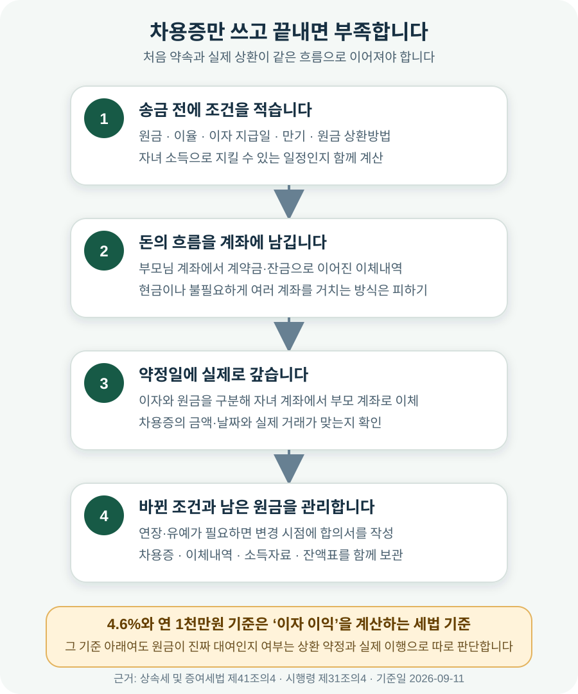

부모님이 집 살 때 1억원을 보태주면 증여세는 얼마일까?
성년 자녀가 부모님에게 집 살 돈 1억원을 처음 증여받는다면, 일반 공제 5천만원을 뺀 5천만원에 10%를 적용해 산출세액은 500만원입니다. 기한 안에 신고해 3% 신고세액공제를 모두 받는 단순 사례라면 납부할 금액은 약 485만원입니다. 다만 최근 10년 안에 부모님에게 받은 돈이 있거나 혼인·출산 공제를 쓸 수 있으면 금액이 크게 달라집니다. ‘빌린 돈’이라면 차용증 한 장보다 실제 이자와 원금 상환 기록이 더 중요합니다.
1억원을 처음 받는 성년 자녀라면 약 485만원입니다
아파트 계약금이나 잔금이 모자라 부모님이 1억원을 보내주기로 했다고 가정해 보겠습니다. 이 돈을 갚지 않아도 된다면 이름을 ‘집값 보조’나 ‘지원금’이라고 붙여도 세금에서는 증여로 봅니다. 증여세는 돈을 준 부모가 아니라 받은 자녀가 신고하고 냅니다.
국내에 거주하는 성년 자녀가 최근 10년 동안 부모·조부모에게 증여받은 재산이 없고, 혼인·출산 추가 공제를 쓰지 않는 가장 단순한 사례의 계산은 다음과 같습니다.
여기서 5천만원은 ‘받아도 국세청에 보이지 않는 금액’이 아니라 세액을 계산할 때 빼 주는 증여재산공제입니다. 국세청은 직계존속에게 받은 증여의 공제 한도를 10년 누계 5천만원으로 안내합니다. 기한 안에 신고하면 산출세액의 3%를 공제받을 수 있습니다.
먼저 “이 돈을 정말 갚을 것인가?”부터 정해야 합니다
부모님 돈이 들어온다는 사실만 같을 뿐, 증여와 대여는 전혀 다른 약속입니다. 증여는 자녀가 돌려주지 않아도 되는 돈이고, 대여는 정해진 때에 실제로 갚아야 하는 돈입니다. 세금을 줄이기 위해 송금 뒤에 서류 이름만 ‘차용증’으로 바꾸는 문제가 아닙니다.
| 구분 | 증여 | 부모님에게 빌린 돈 |
|---|---|---|
| 자녀의 의무 | 원금 상환 의무가 없음 | 약속한 만기와 방법대로 원금을 갚음 |
| 송금 전 준비 | 최근 10년 증여내역과 공제 확인 | 금액·이자·만기·상환방법을 현실적으로 약정 |
| 송금 후 기록 | 이체내역, 증여계약 내용, 신고서 보관 | 이자와 원금의 실제 계좌이체 내역 보관 |
| 집 살 때 표시 | 대상 거래의 자금조달계획서에 증여로 기재 | 가족 차입금으로 기재하고 차용·상환 자료 준비 |
| 가장 흔한 실수 | 5천만원을 넘었는데 신고를 미룸 | 차용증만 쓰고 한 번도 갚지 않음 |
집값 1억원을 부모님이 매도인 계좌로 직접 보내도 결과는 같을 수 있습니다. 자녀가 내야 할 집값을 부모님이 대신 냈다면 자녀가 그만큼 경제적 이익을 얻기 때문입니다. 자녀 통장을 거치지 않았다는 이유만으로 증여가 아닌 것은 아닙니다.
5천만원은 아버지와 어머니에게 각각 받는 한도가 아닙니다
“아버지에게 5천만원, 어머니에게 5천만원을 받으면 모두 공제되지 않을까?”라고 생각하기 쉽습니다. 그러나 성년 자녀가 직계존속에게 받을 때 쓰는 일반 공제는 부모·조부모를 합쳐 10년간 5천만원입니다. 아버지에게 받은 돈과 어머니에게 받은 돈에 공제 5천만원을 따로 적용하는 구조가 아닙니다.
세율을 적용할 때 더하는 과거 증여도 확인해야 합니다. 국세청은 같은 사람에게서 10년 안에 받은 증여재산의 과세가액 합계가 1천만원 이상이면 이번 증여에 가산하고, 증여자가 직계존속이면 그 배우자도 같은 사람에 포함한다고 설명합니다. 따라서 아버지가 먼저 주고 몇 년 뒤 어머니가 다시 주는 경우에도 앞선 금액을 빼놓고 계산해서는 안 됩니다.
예를 들어 6년 전에 아버지에게 3천만원을 받고 당시 공제에 사용했다면, 이번에 어머니에게 1억원을 받을 때 일반 공제 5천만원이 새로 생기는 것이 아닙니다. 남은 공제와 과거 과세가액, 당시 낸 세액을 함께 넣어 다시 계산해야 합니다. 통장 메모만 보고 판단하지 말고 10년치 증여세 신고서와 이체내역을 먼저 모아 보세요.
같은 조건에서 1억·2억·3억원을 비교해 보면 이렇습니다
아래 표는 국내 거주 성년 자녀가 부모님에게 현금을 처음 증여받고, 일반 공제 5천만원만 적용하며, 신고기한 안에 신고해 3% 공제를 모두 받는다고 가정한 단순 예시입니다. 과세표준이 1억원을 넘으면 초과분에 더 높은 세율이 적용되므로 받은 돈이 두 배가 된다고 세금도 정확히 두 배가 되지는 않습니다.
| 받은 금액 | 5천만원 공제 후 | 산출세액 | 기한 내 신고 시 예시 |
|---|---|---|---|
| 1억원 | 5천만원 | 500만원 | 약 485만원 |
| 1억 5천만원 | 1억원 | 1,000만원 | 약 970만원 |
| 2억원 | 1억 5천만원 | 2,000만원 | 약 1,940만원 |
| 3억원 | 2억 5천만원 | 4,000만원 | 약 3,880만원 |
과세표준 1억원 이하는 10%, 1억원 초과 5억원 이하는 20% 세율과 1천만원의 누진공제액을 적용합니다. 예를 들어 2억원을 받으면 일반 공제 뒤 과세표준은 1억 5천만원이고, ‘1억 5천만원 × 20% － 1천만원’으로 산출세액 2천만원이 됩니다. 여기에 3% 신고세액공제를 적용한 예시가 1,940만원입니다.
금액을 직접 바꿔 보고 싶다면 총비용 대시보드의 증여 계산에서 증여가액, 과거 10년 증여액, 혼인·출산 공제 여부를 입력해 볼 수 있습니다. 계산 결과는 계획 단계의 참고값으로 쓰고 실제 신고 전에는 홈택스 자동계산과 신고서를 대조하세요.

결혼하거나 아이가 태어났다면 1억원을 추가로 공제받을 수 있습니다
혼인·출산 증여재산공제는 결혼이나 출산 시기에 부모·조부모가 재산을 증여할 때 기존 일반 공제와 별도로 최대 1억원을 더 빼 주는 제도입니다. 국내 거주자가 직계존속에게 받은 재산 가운데 요건을 갖춘 증여에 적용합니다.
혼인은 혼인신고일 전후 2년 이내, 출산은 자녀의 출생일 또는 입양일부터 2년 이내에 받은 증여가 대상입니다. 혼인 때 1억원, 출산 때 다시 1억원을 받는 것은 아닙니다. 두 공제를 모두 합친 한도가 1억원입니다. 부모와 조부모에게 각각 1억원씩 적용하는 구조도 아닙니다.
따라서 최근 10년 일반 공제 5천만원을 쓰지 않은 성년 자녀가 요건을 갖춰 부모님에게 1억원을 받는다면 일반 공제와 혼인·출산 공제 범위 안이어서 산출세액이 없을 수 있습니다. 1억 5천만원까지 공제 범위 안에 들어갈 수 있고, 2억원을 받는다면 남은 5천만원에 대한 산출세액은 500만원입니다.
| 확인할 것 | 일반 공제 | 혼인·출산 추가 공제 |
|---|---|---|
| 성년 자녀 한도 | 직계존속에게서 10년 누계 5천만원 | 혼인·출산을 모두 합해 최대 1억원 |
| 기간 | 과거 10년 사용액 확인 | 혼인신고일 전후 2년 또는 출생·입양일부터 2년 |
| 주는 사람 | 부모·조부모 등 직계존속 | 부모·조부모 등 직계존속 |
| 주의 | 아버지·어머니 각각 5천만원이 아님 | 혼인 1억＋출산 1억이 아님 |
혼인 전에 공제를 적용받았는데 정해진 기간 안에 혼인신고를 하지 않는 등 요건을 채우지 못하면 정정과 추가 부담이 생길 수 있습니다. 증여일과 혼인신고일·출생일이 경계에 있거나 비거주자 여부가 애매하다면 송금 전에 국세상담센터 126 또는 세무전문가에게 확인하는 편이 안전합니다.
차용증 한 장을 쓰는 것만으로는 빌린 돈이 되지 않습니다
부모님에게 돈을 빌리는 것 자체가 금지되는 것은 아닙니다. 문제는 ‘빌렸다’는 말과 실제 행동이 맞아야 한다는 점입니다. 돈을 보내기 전에 금액, 이자, 만기, 원금 상환방법을 정하고, 자녀의 소득으로 지킬 수 있는 상환계획을 세워야 합니다.
예를 들어 월급에서 생활비와 은행 대출 원리금을 빼면 매달 40만원밖에 남지 않는데 2억원을 몇 년 안에 갚겠다고 쓰면 약정의 현실성이 떨어집니다. 반대로 정해진 날마다 자녀 계좌에서 부모님 계좌로 이자와 원금이 이동하고, 만기 연장이나 조건 변경도 그때그때 문서로 남긴다면 실제 대여라는 설명에 힘이 실립니다.
- 송금 전에 약정 — 금액, 송금일, 이자율, 이자 지급일, 만기, 원금 상환방법을 적습니다.
- 상환 가능한 금액 — 자녀의 소득과 기존 대출을 고려해 실제 지킬 수 있는 일정으로 정합니다.
- 계좌로 이행 — 현금 대신 이자와 원금을 구분해 이체하고 적요를 일관되게 남깁니다.
- 변경도 기록 — 만기 연장이나 상환 유예가 필요하면 지나간 뒤 꾸미지 말고 변경 시점에 합의합니다.
- 부모님의 자금도 확인 — 부모님에게 실제 대여할 자금과 이체 흐름이 있어야 합니다.
인터넷에서 자주 보이는 “얼마까지는 무이자로 빌려도 된다”는 문장만 믿고 차용 여부를 결정하지 마세요. 낮은 이자로 얻은 이익에 증여세를 매기는 계산과, 원금 자체가 진짜 대여인지 판단하는 문제는 서로 다릅니다. 이자 상당액에 세금이 없다는 계산만으로 실제 상환이 없는 원금까지 자동으로 대여가 되는 것은 아닙니다.
계약금·잔금에 쓸 돈이라면 자금 흐름을 한 번에 설명할 수 있어야 합니다
집 계약 직전에는 계약서 금액, 본인 예금, 은행 대출, 기존 집 처분대금, 부모님에게 받은 돈을 한 표에 적어 보세요. 합계가 매매대금과 부대비용에 맞는지 확인하면 “부모님 돈을 내 예금으로 적었다”거나 “잔금은 맞는데 취득세와 중개보수가 빠졌다”는 실수를 줄일 수 있습니다.
자금조달계획서를 내야 하는 거래라면 증여는 증여 항목에, 가족에게 실제로 빌린 돈은 차입금 성격에 맞춰 적고 관련 자료를 준비합니다. 자금조달계획서는 세금을 대신 신고하는 서류가 아니므로 증여로 적었다고 증여세 신고가 끝나는 것도 아닙니다. 자세한 작성 항목은 자금조달계획서 작성 방법에서 이어서 확인할 수 있습니다.
이체는 부모님 계좌에서 자녀 계좌, 자녀 계좌에서 매도인 계좌로 흐름이 보이게 하는 편이 설명하기 쉽습니다. 부모님이 매도인에게 직접 송금해야 한다면 계약서상 지급일, 송금자, 송금 목적을 기록하고 이체확인증을 보관하세요. 현금으로 주거나 여러 계좌를 불필요하게 거치면 증여인지 대여인지 설명하는 자료가 오히려 복잡해집니다.
증여받은 달의 말일부터 3개월 안에 받은 사람이 신고합니다
일반적인 현금 증여는 재산을 받은 날이 속하는 달의 말일부터 3개월 이내에 신고·납부합니다. 예를 들어 2026년 9월 11일에 받았다면 9월 말일부터 계산해 2026년 12월 31일까지 신고하는 식입니다. 마지막 날이 토요일·공휴일·근로자의 날이면 그 다음 날까지입니다.
홈택스에서 ‘세금신고 → 증여세 신고’로 들어가 전자신고할 수 있고, 증여재산과 평가명세, 과세표준 신고서, 이체내역과 관계를 확인할 자료 등을 준비합니다. 혼인·출산 공제를 적용한다면 혼인관계나 출생·입양과 날짜를 확인할 서류도 챙깁니다.
공제 범위 안이라 산출세액이 없다고 판단한 경우에도 주택 자금으로 쓴 돈의 성격과 날짜를 남기기 위해 신고를 검토할 수 있습니다. 다만 ‘세금이 0원이면 모든 경우에 반드시 신고해야 한다’고 단정할 수는 없으므로 본인의 과거 증여와 적용 공제를 확인해 결정하세요.
부모님이 송금하기 전에 이것만은 확인하세요
- □ 이 돈을 돌려주지 않는 증여인지, 실제로 갚을 대여인지 가족이 같은 뜻으로 정했다.
- □ 부모·조부모에게서 최근 10년 동안 받은 현금·주식·부동산과 신고서를 확인했다.
- □ 성년 자녀 일반 공제 5천만원이 부모 각각의 한도가 아니라는 점을 확인했다.
- □ 혼인신고일 또는 자녀 출생·입양일과 증여일의 간격을 확인했다.
- □ 혼인·출산 추가 공제는 둘을 합해 1억원 한도임을 확인했다.
- □ 증여라면 예상세액까지 포함해 집 구입 예산을 잡았다.
- □ 대여라면 자녀 소득으로 지킬 수 있는 이자·원금 상환일정을 송금 전에 정했다.
- □ 부모님 돈을 자금조달계획서에서 본인 예금으로 바꿔 적지 않았다.
- □ 계약금·잔금 이체확인증과 증여계약 또는 차용·상환 자료를 한 폴더에 보관한다.
- □ 증여받은 달의 말일부터 3개월이 되는 신고기한을 달력에 표시했다.
공식 자료 및 참고자료
- 국세청 — 증여세 세액계산 흐름도 (10년 합산, 공제한도, 세율)
- 국세청 — 증여세 신고납부기한
- 국세청 — 증여세 신고시 유의사항 (홈택스 신고, 3% 신고세액공제)
- 국세상담센터 — 혼인·출산 증여재산공제 자주 묻는 질문
- 국가법령정보센터 — 상속세 및 증여세법 제53조 (증여재산공제)
- 국가법령정보센터 — 상속세 및 증여세법 제53조의2 (혼인·출산 증여재산공제)
- 국가법령정보센터 — 상속세 및 증여세법 제26조 (세율)
정보 기준일: 2026-09-11. 이 글의 계산은 국내 거주 성년 자녀가 부모님에게 현금을 증여받는 일반적인 경우를 단순화한 예시이며 개별 세무 자문이 아닙니다. 과거 증여, 비거주자 여부, 조부모 증여, 우회 증여, 저가양수, 부담부증여, 신고 후 조건 위반 등이 있으면 계산이 달라집니다. 큰 금액을 송금하거나 차용과 증여를 섞을 때는 실행 전에 세무사 또는 국세상담센터 126에 확인하세요.
집 살 돈을 계산할 때 같이 쓸 도구
- 부동산 총비용 대시보드증여가액·과거 증여·혼인출산 공제로 예상세액 비교
- 취득세 계산기매매가와 주택 수를 넣어 취득 부대비용 확인